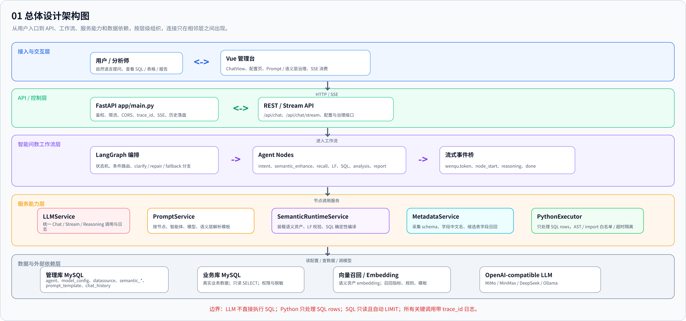
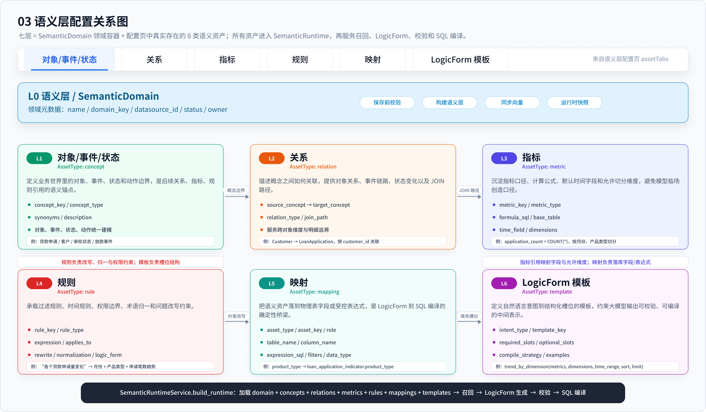

企业本体建模
用对象、属性、关系、状态和动作统一描述企业业务世界，建立跨系统共享的业务模型。

把分散的业务概念、数据口径和决策动作，沉淀为可发布、可执行、可审计的企业本体。
用对象、属性、关系、状态和动作统一描述企业业务世界，建立跨系统共享的业务模型。
让问题先匹配企业对象与业务口径，再生成受控查询、分析结论和业务报告。
将业务动作、前置条件、权限和状态效果纳入模型，形成可追溯的决策闭环。
企业本体先统一业务结构，再驱动数据连接、智能问数和受控决策。
建模客户、订单、贷款、案件等核心业务对象及属性。
表达对象之间的业务关联、身份链路和数据连接路径。
定义参数、前置条件、权限约束和状态变化效果。
检查模型完整性并发布版本，形成稳定的运行时契约。
以本体驱动查询、分析、业务动作和全链路审计。
从对象结构到业务动作，建立能够连接数据、AI Agent 与业务应用的统一企业模型。
定义客户、订单、贷款、案件等企业核心实体及其业务身份。
描述对象字段、数据类型、业务状态和完整性约束。
表达对象之间的一对一、一对多和多对多业务关联。
定义动作参数、前置条件、授权角色和状态效果。
承载真实或演示业务对象，并建立可浏览的关系网络。
校验并发布本体版本，记录动作上下文和状态变化。

本体定义、发布、执行和审计各自受控，关键决策可以验证和追溯。
企业本体动作执行边界 发布已校验的本体版本 -> 校验执行角色与审批要求 -> 检查业务前置条件 -> 执行动作并更新对象状态 -> 校验对象版本，避免并发覆盖 -> 记录决策上下文与前后快照 未授权或不满足条件的动作：拒绝执行并保留审计信息
选择业务领域，定义对象、关系和动作，校验发布后再连接数据源、智能问数与业务执行。
docker compose up -d uv sync uv run uvicorn app.main:app --host 0.0.0.0 --port 4400 cd frontend npm install npm run dev